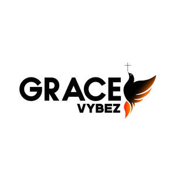
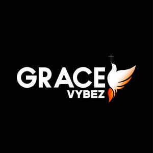

Trade Mark Journal No.2025/042 17 October 2025
UK00004265813 18 September 2025 (25,41)
Mark 1

Mark 2

- Class 25
- Turtleneck shirts; Shirts; Dress shirts; Short-sleeve shirts; Short-sleeved shirts; Sweat shirts; Open-necked shirts; Long-sleeved shirts; Polo shirts; Shirt yokes; Yokes (Shirt -); Knit shirts; Pique shirts; Mock turtleneck shirts; Collared shirts; Sleep shirts; Corduroy shirts; Camouflage shirts; Rugby shirts; Short-sleeved T-shirts; Football shirts; Hooded sweat shirts; Shirts for suits; Maternity shirts; Button-front aloha shirts; Golf shirts; Night shirts; Shirts and slips; Soccer shirts; Ramie shirts; Woven shirts; Button down shirts; Dress pants; Aloha shirts; Shirt fronts; Casual shirts; T-shirts; Yoga shirts; Sleeveless jerseys; Tennis shirts; Sport shirts; Bibs, sleeved, not of paper; Fishing shirts; Under shirts; Sweat pants; Bib shorts; Denim pants; Jeans; Sports shirts with short sleeves; Sports shirts; Moisture-wicking sports shirts; Nappy pants [clothing]; Shorts [clothing]; Hunting shirts; Trousers shorts; Pants; Boy shorts [underwear]; Tee-shirts; Leggings [trousers]; Sweatpants; V-neck sweaters; American football shirts; Polo sweaters; Sweat shorts; Camouflage pants; Jerseys [clothing]; Turtleneck sweaters; Blue jeans; Sleeveless jackets; Denim jeans; Trousers for sweating; Printed t-shirts; Undershirts; Padded shirts for athletic use; Corduroy pants; Stretch pants; Mock turtleneck sweaters; Trousers; Maternity pants; Sleep pants; Golf trousers; Men's dress socks; Waterproof pants; Dress shoes; Wristbands [clothing]; Pants (Am.); Pyjamas [from tricot only]; Bibs, not of paper; Chino pants; Corduroy trousers; Snowboard trousers; Pirate pants; Clothing for wear in wrestling games; Maternity shorts; Breeches for wear; Warm-up pants; Romper suits; Fleece shorts; Moisture-wicking sports pants; Bib tights; Sleeved jackets; Underwear; Bib overalls for hunting; Trouser socks; Clothes; Golf clothing, other than gloves; Slacks; Snap crotch shirts for infants and toddlers; Short overcoat for kimono (haori); Rugby shorts; Shorts; Skirt suits; Jackets (Stuff -) [clothing]; Stuff jackets [clothing]; Maternity wear; Clothing for leisure wear; Shoes for casual wear; Golf shorts; all the aforementioned being in relation to religion.
- Class 41
- Entertainment; Interactive entertainment; Entertainment services; Education, entertainment and sports; Sports entertainment services; Radio entertainment; Live entertainment; Interactive entertainment services; Nightclub services [entertainment]; On-line entertainment; Booking of entertainment; Entertainment services in the nature of arranging social entertainment events; Corporate entertainment services; Live entertainment services; Popular entertainment services; Hospitality services (entertainment); Corporate hospitality (entertainment); Entertainment club services; Club entertainment services; Club services [entertainment]; Education, entertainment and sport services; Jazz music entertainment services; Entertainment services for children; Production of live entertainment; Online entertainment services; Live entertainment production services; Entertainment booking services; Lighting productions for entertainment purposes; Provision of live entertainment; Production of live entertainment events; Booking of entertainment halls; Rental of entertainment halls; Hosting of entertainment events; Social club services for entertainment purposes; Organization of entertainment events; Arranging of entertainment shows; Organization of entertainment competitions; Entertainment services for producing live shows; Festivals (Organisation of -) for entertainment purposes; Multimedia entertainment software publishing services; all the aforementioned being in relation to religion.
GRACEVYBEZ LTD